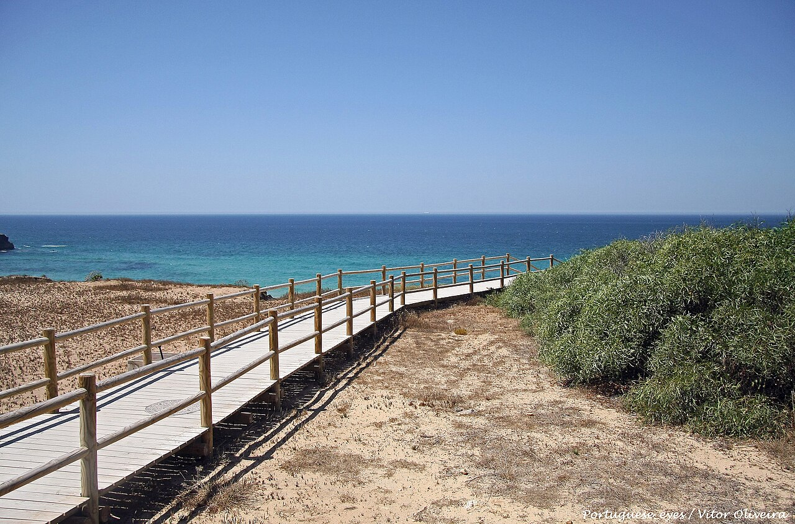
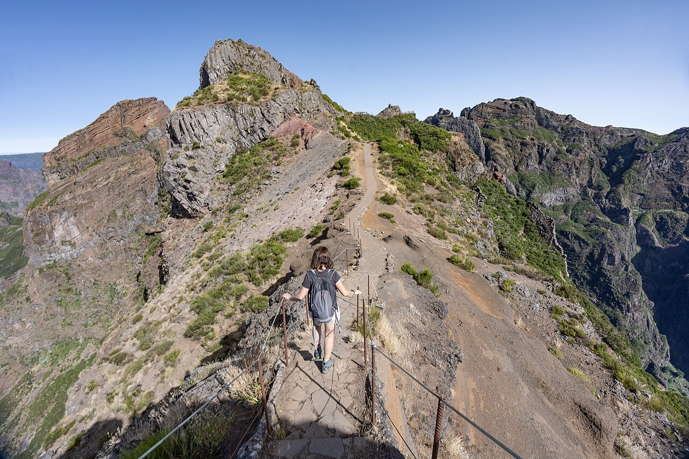
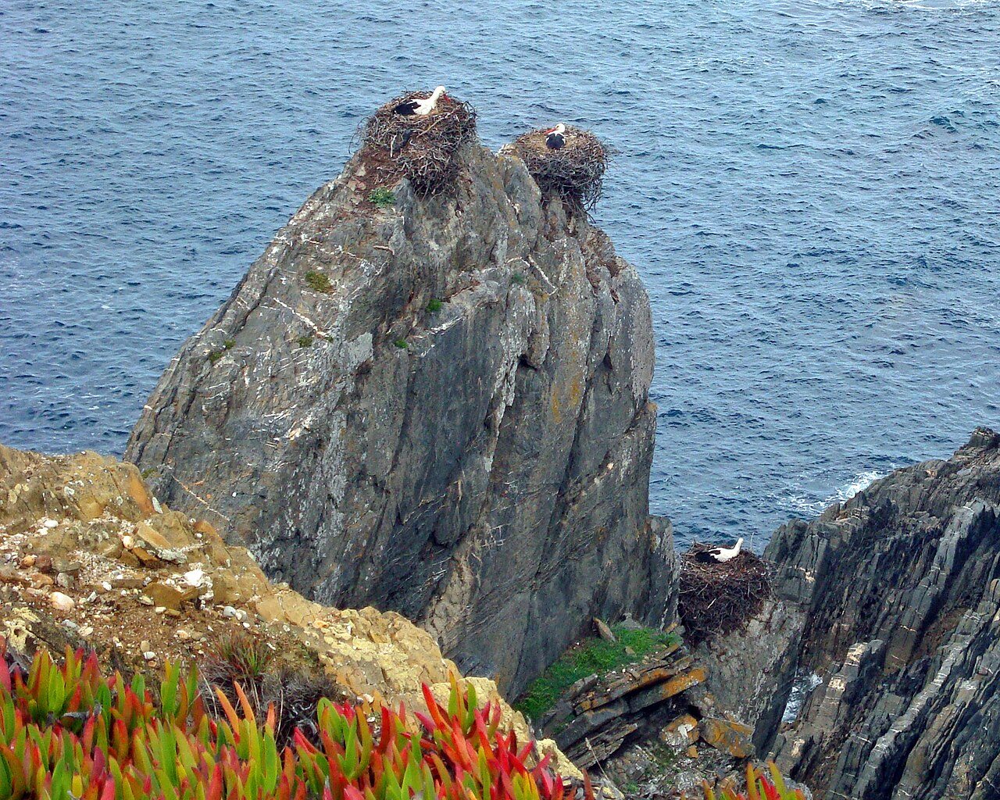
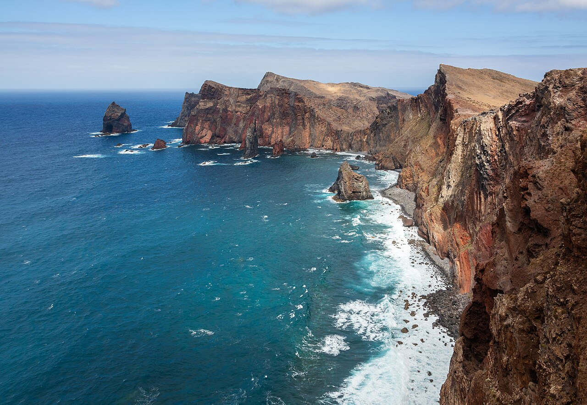
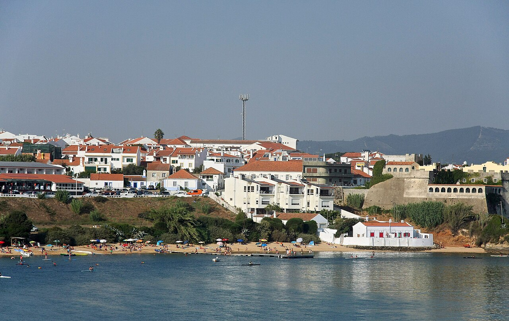
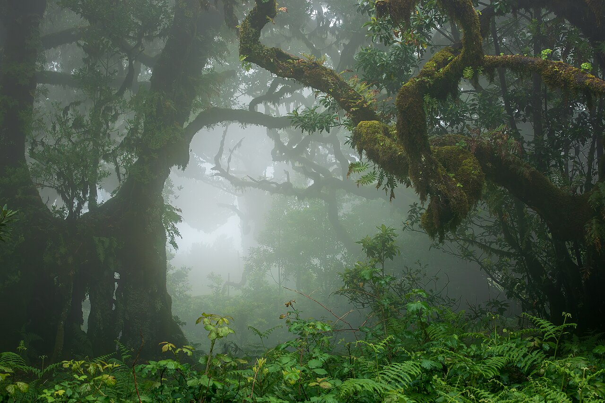
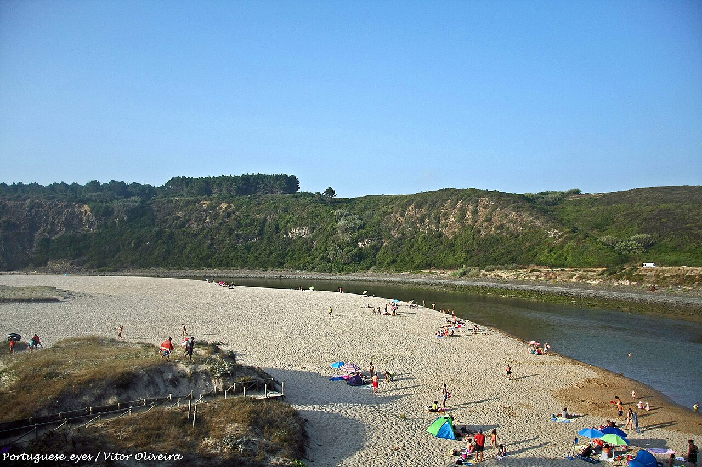
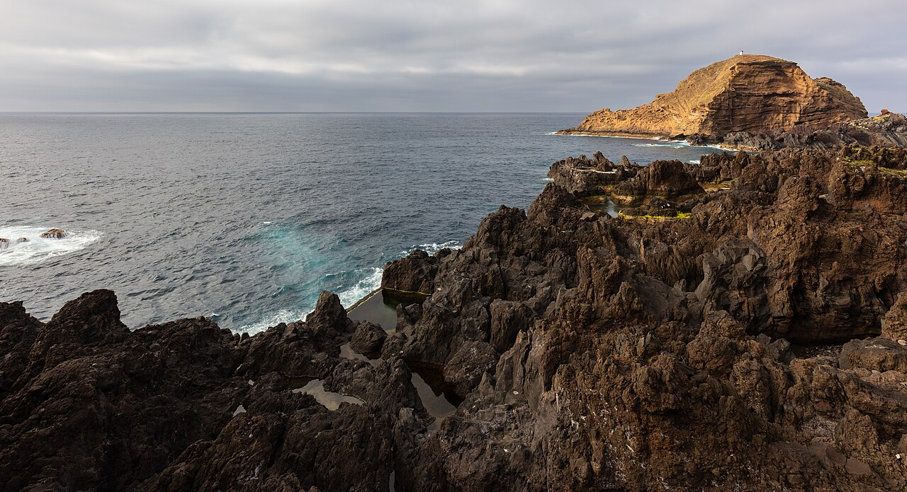
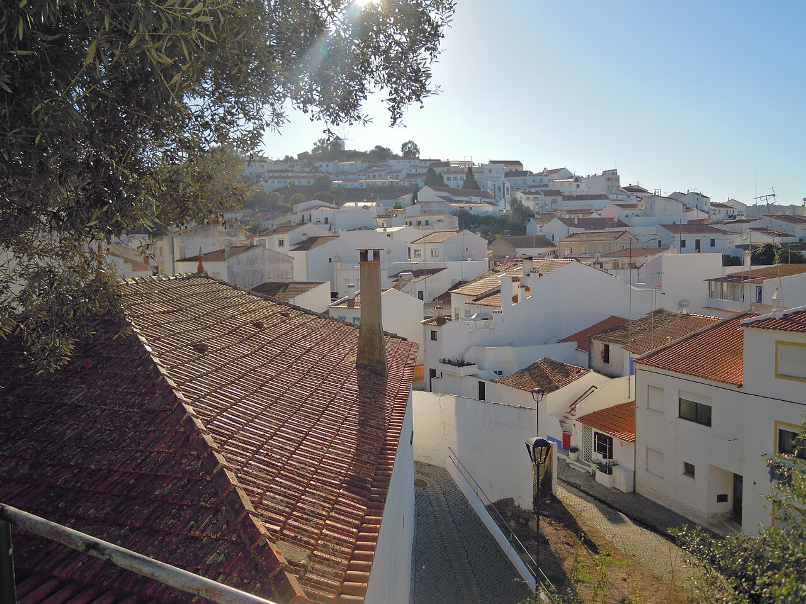
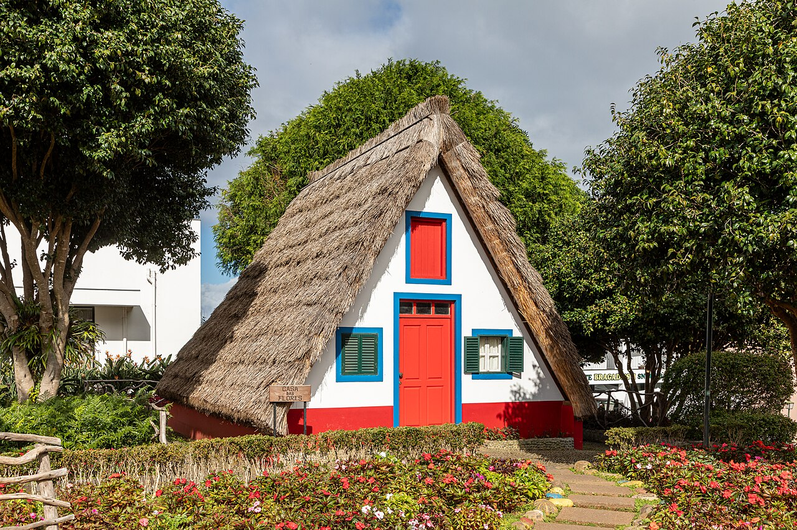

Fisherman's Trail
vs. Madeira Island
Two extraordinary Portuguese trekking expeditions planned under identical parameters: 2 travelers combined, 1-stop US transatlantic flights via Lisbon (LIS), zero alcohol dining, and American units (miles, feet, °F). Here is how they compare across scenery, physical adrenaline, logistics, and real costs.
Fisherman's Trail Expedition
A 6-Day, 75.8-mile (122 km) horizontal trek along pristine Atlantic sea cliffs, shifting coastal sand dunes, cliff-nesting storks, and sleepy whitewashed fishing villages.
Madeira Island Master Expedition
An 8-Day, 38.6-mile vertical alpine odyssey across 6,100-ft volcanic knife-edge ridges above cloud inversions, 500-year-old misty laurel forests, and Jurassic levada waterfall canyons.
The Scenery Showdown
Direct visual matchups comparing what your eyes will actually see each day on the trail.
Praia do Malhão & Coastal Sand Dunes

The defining physical signature of the Rota Vicentina: miles of deep, unpaved coastal sand dunes alongside crashing Atlantic breakers. Peaceful, salty, and flat (max trail elevation never exceeds 512 ft / 156 m).
PR1 Knife-Edge Ridge Above a Sea of Clouds

You stand on a razor-thin basalt spine connecting Pico do Arieiro to Pico Ruivo above an unbroken ocean of blinding white clouds. Hand-hewn tunnels, sheer 3,000-ft drops on both sides, and heart-pounding alpine drama.
Cabo Sardão Stork Nests & Dark Schist Bluffs

Dark jagged schist sea stacks where white storks uniquely build their nests directly over surging Atlantic surf—the only place in the world where storks nest on marine cliffs (160 ft / 50 m drop).
Ponta de São Lourenço & Cabo Girão

Fiery red volcanic basalt cliffs battered by 40-ft swells at PR8 São Lourenço, with Europe's highest sea cliff at Cabo Girão towering 1,900 ft (580 m) straight down into ocean surf below a glass skywalk.
Rio Mira Estuary & Vila Nova de Milfontes

Crossing the sparkling Mira River estuary by wooden fisherman's ferry at Vila Nova de Milfontes, framed by maritime umbrella pines, tranquil tidal sandbanks, and fragrant wild cistus scrub.
500-Yr Fanal Mist Forest & Levada Canyons

Walking among 500-year-old twisted Til trees in the prehistoric Fanal cloud forest enveloped in swirling fog, plus hiking through dripping Jurassic rock tunnels to the 330-ft Levada do Caldeirão Verde waterfall cauldron.
Praia de Odeceixe Horseshoe Sandspit

One of Portugal's 7 Natural Wonders: a dramatic horseshoe sandspit where the gentle Seixe river bends completely around golden sands into crashing Atlantic surf, perfect for sunset barefoot strolls and river wading.
Porto Moniz Volcanic Lava Sea Pools

Crystal-clear 68°F seawater pools carved naturally out of black basalt volcanic lava reefs, constantly refreshed by huge rolling Atlantic breakers splashing over outer rock barriers.
Odeceixe Village & Point-to-Point Walking

The ultimate stress-free workflow: walk out your guesthouse front door each morning, hike along the coast with luggage transferred ahead, and arrive in a whitewashed fishing village for grilled sea bass and fresh bread. Zero rental cars, zero parking stress.
Santana Heritage Palheiros & Funchal Hubs

Iconic triangular thatched stone palheiros in Santana and historic cobblestone plazas in Funchal. Reached via exhilarating rental car drives along 25% gradient mountain switchbacks, early 6:45 AM reverse-parking maneuvers, and coastal tunnels.
Head-to-Head Breakdown
Granular metrics across terrain, difficulty, weather, and day-to-day operations.
| Expedition Feature | 🌊 Fisherman's Trail (Rota Vicentina) | 🌋 Madeira Island Expedition |
|---|---|---|
| Trek Style & Routing How you move across the terrain |
Point-to-point through-hike Walk town-to-town from Porto Covo to Odeceixe / Rogil. Never retrace steps. |
Hub-and-spoke day expeditions Dual basecamps (Funchal & Santana) with rental car access to diverse island corners. |
| Distance & Elevation Total mileage & vertical gain |
75.8 mi (122 km) • ~2,200 ft gain Long horizontal mileage across deep dunes. |
38.6 mi (62 km) • +16,480 ft gain Shorter mileage, massive vertical mountain staircases. |
| Physical Challenge Primary muscular & mental strain | Calf burn & sand fatigue: Trudging 12–14 miles/day through loose beach sand under unshaded sun. | Quad & knee burn + exposure: Thousands of steep stone steps, narrow levada ledges, and sheer 3,000-ft cliff drops. |
| Scenery Diversity Variations in landscape per 24h |
1 Primary Biome: Coastal sand dunes, Atlantic beaches, and schist sea cliffs. Consistent and meditative. |
5 Distinct Biomes: Alpine 6,000-ft peaks, dripping cloud canyons, 500-yr misty laurel forest, lava pools, volcanic sea spires. |
| Ground Transportation How you travel between destinations | Zero driving required: Rede Expressos express bus from Lisbon + local taxis + luggage transfer services. | Dedicated rental car required: Manual/automatic with hill-hold torque for steep 25% mountain switchbacks and tunnels. |
| Weather & Predictability Typical temperature & precipitation | Stable Atlantic coastal sunshine: Breezy 65°F–75°F (18°C–24°C), low rain probability in spring/fall. | Dramatic microclimates: 72°F and sunny in Funchal, 45°F and gale-force mist at 6,000-ft peaks. Live webcams required. |
| Dining & Cuisine (Zero Alcohol) Local culinary highlights | Fresh grilled Atlantic sea bass, percebes (goose barnacles), Alentejo bread soup, fresh orange juice, Água das Pedras. | Garlic-butter bolo do caco, skewered laurel-wood espetada, black scabbard fish with passion fruit, fresh maracujá juices, non-alcoholic Nikita. |
| Logistical Complexity Permits, timings, reservations | Low complexity: Book guesthouses along the route; no trail permits or parking time-slots. | Moderate-High: 2026 IFCN SIMplifica PR1 permits (€10.50), PR1 one-way taxi shuttles, 6:45 AM parking rush. |
Strict Apples-to-Apples Ledger
All figures represent the strictly unified shared budget for 2 travelers combined (never split per person). Includes identical 1-stop US transatlantic flights via Lisbon (LIS) on TAP Air Portugal.
Fisherman's Trail (6 Days)
Madeira Expedition (8 Days)
What Hikers Who Did Both Say
Direct takeaways and reviews compiled from r/hiking, r/Madeira, r/travel, and European trekking forums.
Which Trip Is Right for You?
Answer these 5 quick questions to calculate your personalized compatibility score.
Select your choices above
Click through the 5 preferences above to calculate your customized match and decision report!